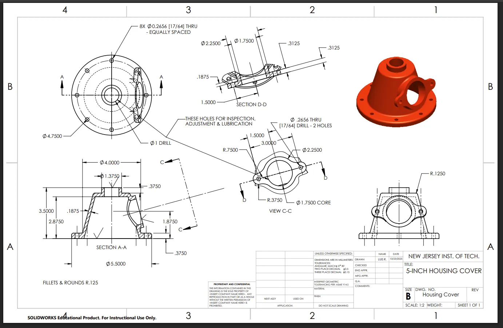

5-inch housing cover, detailed drawing
I took a supplied SolidWorks model and turned it into a drawing a machinist could build from. Six views on one sheet define the stepped bore, the bolt pattern, and the side lug with nothing left to guess.
- Top view, two full sections, an auxiliary view, a side view, and an isometric on one B-size sheet
- 8× Ø17/64 in mounting holes on a Ø4.750 in bolt circle
- Dimensioned and toleranced per ASME Y14.5
ToolsSolidWorks
TypeDrawing package
Scale1:2
DrawnOct 2025